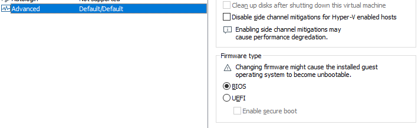
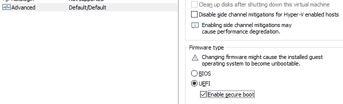
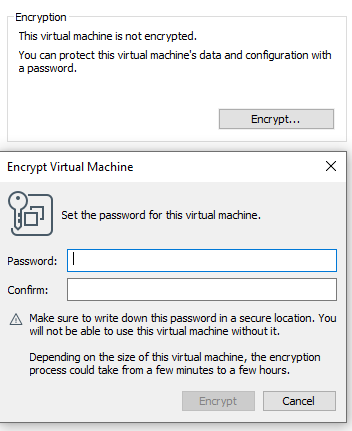
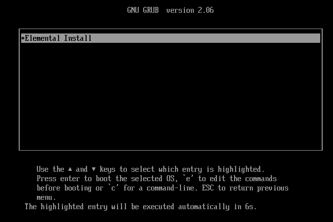
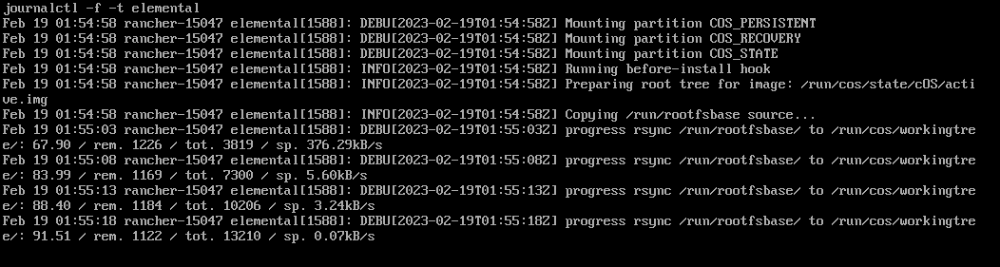

|
Este documento ha sido traducido utilizando tecnología de traducción automática. Si bien nos esforzamos por proporcionar traducciones precisas, no ofrecemos garantías sobre la integridad, precisión o confiabilidad del contenido traducido. En caso de discrepancia, la versión original en inglés prevalecerá y constituirá el texto autorizado. |
Cómo usar SUSE® Rancher Prime: OS Manager con Rancher y VMware
Extracto
En este documento veremos cómo configurar una máquina virtual en VMware Workstation para iniciar nodos Elemental.
Requisitos previos
Rancher 2.8 o superior instalado y en funcionamiento. Consulta las guías de inicio rápido.
Paso 1: Crea el punto final de registro
Necesitamos crear una imagen ISO para iniciar nodos y registrarlos contra la instancia de Rancher. Para eso se requiere un punto final de registro (MachineRegistration recurso).
Consulta este ejemplo de MachineRegistration:
apiVersion: elemental.cattle.io/v1beta1
kind: MachineRegistration
metadata:
name: fire-nodes
namespace: fleet-default
spec:
config:
cloud-config:
users:
- name: root
passwd: root
elemental:
install:
reboot: true
device: /dev/sda
debug: true
machineInventoryLabels:
element: fire
manufacturer: "${Product/Vendor}"
productName: "${Product/Name}"
serialNumber: "${Product/Serial Number}"
machineUUID: "${Product/UUID}"La MachineRegistration anterior asume que los nodos incluyen TPM 2.0. En caso de que la máquina virtualizada de destino no incluya un dispositivo TPM virtual, se puede configurar una emulación de software en la sección config.elemental.registration.
Considere el ejemplo siguiente:
apiVersion: elemental.cattle.io/v1beta1
kind: MachineRegistration
metadata:
...
spec:
config:
cloud-config:
...
elemental:
install:
...
registration:
emulate-tpm: true
emulated-tpm-seed: -1
machineInventoryLabels:
...emulated-tpm-seed: -1 establece al cliente para usar una semilla aleatoria para calcular el hash TPM, esto es útil para poder reutilizar la misma definición de punto final de registro para múltiples máquinas. Consulta más documentación de TPM.
Paso 2: Crea la ISO de instalación
El medio de instalación necesita estar vinculado a un punto final de registro específico. Esto se crea y gestiona con el recurso SeedImage.
Considere el ejemplo siguiente:
apiVersion: elemental.cattle.io/v1beta1
kind: SeedImage
metadata:
name: fire-img
namespace: fleet-default
spec:
baseImage: registry.suse.com/suse/sle-micro-iso/5.5:2.0.2
registrationRef:
apiVersion: elemental.cattle.io/v1beta1
kind: MachineRegistration
name: fire-nodes
namespace: fleet-defaultUna vez que se crea el recurso SeedImage, comienza a construir un ISO con la imagen del sistema operativo proporcionada y a vincularlo al punto final de registro dado. Una vez hecho esto, estará disponible una URL de descarga en el estado del recurso SeedImage.
Puedes descargarlo con:
wget --no-check-certificate --content-disposition $(kubectl get seedimages.elemental.cattle.io -n fleet-default fire-img -o jsonpath="{.status.downloadURL}")Paso 3: Arranca el dispositivo objetivo
Ahora, idealmente, solo deberías grabar el ISO en una unidad USB y arrancar tu dispositivo edge utilizando la unidad USB, y una vez que arranque y se active en Rancher bajo el inventario de máquinas, puedes seleccionar y crear un clúster a partir de él; sin embargo, aquí utilizaremos una máquina virtual para imitar un dispositivo edge para pruebas.
3.1 Prepara la máquina virtual para emular TPM
En VMware Workstation, crea una máquina virtual como lo harías normalmente, asegúrate de darle al disco duro un tamaño de al menos 40 GB.
Ahora edita la configuración de la máquina y ve a la pestaña "Opciones". La última opción sería "Avanzado".
Haz clic en "Avanzado" y en el panel de la ventana derecha cambia el tipo de firmware de "BIOS" a "UEFI" y marca la opción "Habilitar arranque seguro" como sigue:
-
Configuraciones predeterminadas con BIOS seleccionado

-
Configuraciones actualizadas con UEFI seleccionado y arranque seguro habilitado

Ahora, en la misma pestaña "Opciones", haz clic en la opción "Control de acceso" y haz clic en "Cifrar" en el lado derecho.
Esto te pedirá que ingreses una contraseña para cifrar la máquina. Escribe una contraseña y haz clic en "Cifrar"

Es importante añadir el hardware TPM. A continuación, vuelve a las opciones de Hardware y haz clic en "Añadir"
Y añade el hardware TPM (Módulo de Plataforma de Confianza) y haz clic en "Finalizar"
Ahora, con la finalización de este paso, nuestra VM está lista.
3.2 Arranca la VM con la ISO Elemental
A continuación, añade la ISO que creamos anteriormente en la VM y arráncala.
Debería arrancar con la ISO y comenzar a instalar Elemental:


Y una vez que esté completo, reiniciará la VM y aparecerá como activa en el inventario de máquinas en Rancher.